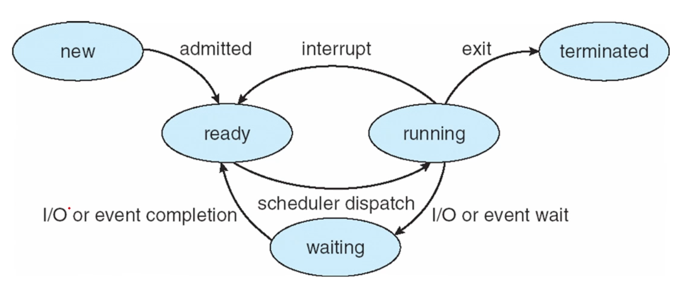

위키피디아에 찾아보았다.
In computing, a process is the instance of a computer program that is being executed by one or many threads. It contains the program code and its activity. Depending on the operating system (OS), a process may be made up of multiple threads of execution that execute instructions concurrently.
인스턴스는 여기서 뭐지?
In a computer system, any time a new context is created based on some model, it is said that the model has been instantiated. In practice, this instance usually has a data structure in common with other instances, but the values stored in the instances are separate. Changing the values in one instance will then not interfere with the values of some other instance. A compute instance can be software or hardware which can run code, for example a CPU, GPU or a virtual machine.
실행중인 프로그램(Program in execution)을 프로세스라고 한다. 운영체제 작업의 단위. 프로세스는 그 일을 하기 위해 특정 자원(CPU time, 메모리, 파일, I/O 디바이스)들을 필요로 한다.
하드 디스크에서 메모리로 로드돼서 CPU가 fetch해서 실행할 수 있는 상태의 프로그램을 프로세스라고 한다.
프로세스의 메모리 레이아웃은 다음과 같은 섹션들로 나뉜다.
프로세스는 다섯개의 life cycle을 가진다.
I/O 기다리는 애는 ready가 아니라 waiting으로 간다는 것 주의!

PCB(Process Control Block)이라는 구조체를 만들어서 프로세스를 관리. 프로세스에게 필요한 모든 정보를 여기 담자! 각 프로세스가 가져야 할 정보는 PCB로 handling된다.
프로그램 카운터와 레지스터를 문맥, context라고 한다.
여기서 우리가 살펴본 프로세스는 single thread of execution을 실행한다. 한 번에 한 task밖에 못하니 multiprocessing(운영체제의 핵심 기능, 이거때매 있음!)을 위해서는 여러 쓰레드가 필요하다.
위에 thread에서 용어를 따 와 하나의 프로세스에서 lightweight process인 thread(Chapter4)를 할 수 있게 함. 이게 유리해서 대부분 multithreading 위주 병렬 처리, concurrency를 함.
Multiprogramming의 목적은 동시에 여러 프로세스를 실행시키는 것. At the same time, simultaneously, concurrently 등등 같은 말들이 있지만 parallel한 것과는 의미가 다름. 아무튼 CPU 사용량을 늘리기 위해 이 짓을 함.
time sharing의 이유는 CPU를 프로세스간 빠르게 전환하여 각 프로그램들이 동시에 작동하는 것처럼 보이게 하는 것.
이것을 위해 CPU를 스케쥴링 해줘야 함. Scheduling Queue. Ready queue. I/o관련된건 io 디바이스에 있는 ready queue에 가 있을 수도 있음. 실제 구현은 연결 리스트.
Context Switch. 문맥이란, 프로세스가 사용되고 있는 상태를 말한다. PCB에 저장되어있음. Interuppt가 일어나면 문맥을 저장하고 나중에 resume될 떄 불러온다. Context switch란 CPU 코어를 다른 프로세스에게 넘겨주는데, 문맥 저장과 복원을 하는 것.
운영체제는 프로세스 생성과 종료를 위한 mechanism을 제공해야 한다.
프로세스는 새로운 프로세스를 만들 수 있다. 부모 프로세스와 자식 프로세스로 나뉨. fork()라는 시스템 콜 사용. 첫번째 프로세스가 init, pid = 1. 프로세스의 트리 관계가 성립한다.
실행에는 두가지 가능성이 있음. Concurrent하게 동시에 실행 / 부모가 자식의 종료까지 대기. adress space 차원에서도 두가지가 있음. 자식이 부모 프로세스의 복제. 별도의 영역을 할당할 필요 없음. PCB만 따로 / 그리고 뭐??
프로세스 종료. exit() 시스템 콜. OS가 할당된 것들을 삭제함.
Zombie: 부모는 있는데 신경 안씀. 부모일을 계속 하고 있음. Orphan: 부모가 wait 없이 종료. daemon, background 프로세스를 만들 때 활용.
UNIX계열에서 새로운 프로세스는 fork를 통해 생성된다.
fork 이후에 부모는 계속 실행되거나 wait 콜로 자식이 끝나기를 기다릴 수 있다.
wait 없이 실행했을 때 항상 parent가 먼저 실행될 보장은 없다. Synchronization이 꼭 필요해진다. 동기화를 잘 해줘야 동시에 실행되는 환경이 많은 문제를 일으키기 때문에. 앞으로 배울 대부분의 문제가 여기서 발생한다. 프로세스간 통신도 한다. IPC 다음에 배움.
#include <stdio.h>
#include <unistd.h>
int main()
{
pid_t pid;
pid = fork();
printf("%d", pid);
}
이렇게 했을 때 왜 숫자 하나만 뜰까 ^^
#include <stdio.h>
#include <unistd.h>
#include <sys/wait.h>
int main()
{
pid_t pid;
pid = fork();
if (pid > 0)
wait(NULL);
printf("Hello, Process! %d\n", pid);
}
#include <stdio.h>
#include <unistd.h>
#include <sys/wait.h>
int main()
{
pid_t pid;
pid = fork();
if (pid == 0)
{
execlp("/bin/ls", "ls", NULL);
printf("Another commands...\n");
}
else if (pid > 0)
{
wait(NULL);
printf("Waiting Complete");
}
return 0;
}
프로세스가 독자적으로 일 할때는 문제 없지만, 서로 다른 프로세스가 데이터를 공유하거나 메시지를 주고 받을 때 문제가 생김.
Inter-Process Communication - Shared memory - Message passing: 운영체제에게 맡김. message queue가 있음.
Producer-Consumer Problem 협동하는 프로세스들의 개념을 설명하기 위함 생산자는 정보를 생산, 소비자는 소비. Shared memory에서는 버퍼를 사용해 producer가 채우고 consumer가 가져감. Bounded buffer임. 이걸 shared memory로 만들면 된다. 각 프로세스의 영역에 접근하는건 보안상 안되고, 별개의 공유 메모리 영역을 운영 체제가 할당해줘야한다. 하지만 알아서 잘 공유하는게 힘듦.
Message-passing: 운영체제가 도와줌. shared memory의 관리를 os가 알아서 함.
Prosumer간의 통신. 수백명이 동시에 한다면 message passing은 힘들고 shared memory가 사용됨.
Communication Links: P와 Q가 통신한다면 링크가 있어야 한다.
Direct. 각 프로세스가 커뮤니케이션 상대를 알고 있음. send(P, messeage), receive(Q, message) 이러면 커뮤니케이션 링크가 자동으로 생성됨. 두 프로세스간에 하나의 링크가 존재.
Indirect. 메시지가 mailbox, port로 보내지고 그곳에서 받아온다. 포트는 객체로 볼 수 있으며 프로세스에 의해 메시지가 배치되고 꺼내어질 수 있다. send(A, message), receive(A, message). 특정 대상이 있는 것이 아니라 메일함에 놓을 뿐. 이 때는 두 멤버가 메일박스를 공유해야 메시지를 주고받을 수 있다. 두개 이상의 프로세스가 통신할 수 있다. OS는 메일박스의 생성, 송수신, 삭제의 기능을 제공한다.
실제 구현에서는 blocking(sync), non-blocking(async)로도 나뉨. Blocking send: 메시지가 잘 수신받을 때까지? sender가 block된다. 1기가짜리 버퍼에 4기가 영화를 보낸다고 하면 4기가 다 보내는 동안 sender는 다른 일을 못함.
Shared Memory: POSIX Shared Memory POSIX: Portable Operating System Interface (for UNIX) memory-mapped files을 이용해서 버퍼를 잡음.
Message Passing: Pipes One of the earlist IPC mechanisms on UNIX systems.
// Producer process illustrating POSIX shared-memory API
// gcc test.c -lrt
// maxOS는 lrt 필요없는듯~!
#include <stdio.h>
#include <unistd.h> // ftruncate
#include <sys/mman.h> // shm_open, mmap, PROT_READ
#include <fcntl.h> // O_CREAT
#include <string.h> // strlen
int main()
{
// the size of shared memory
const int SIZE = 4096;
// the name of shared memory
const char *name = "OS";
const char *message_0 = "Hello, ";
const char *message_1 = "Shared Memory!\n";
// the file descriptor of shared memory
int shm_fd;
// pointer to shared memory
char *ptr;
// create the shared memory object
shm_fd = shm_open(name, O_CREAT | O_RDWR, 0666);
// configure the size of the shared memory
ftruncate(shm_fd, SIZE);
// map the shared memory objecty
ptr = mmap(0, SIZE, PROT_READ | PROT_WRITE, MAP_SHARED, shm_fd, 0);
// write to the shared memory
sprintf(ptr, "%s", message_0);
ptr += strlen(message_0);
sprintf(ptr, "%s", message_1);
ptr += strlen(message_1);
return 0;
}
// Consumer process illustrating POSIX shared-memory API
#include <stdio.h>
#include <sys/mman.h>
#include <fcntl.h>
int main()
{
const int SIZE = 4096;
const char *name = "OS";
int shm_fd;
char *ptr;
shm_fd = shm_open(name, O_RDONLY, 0666);
// 오 write 있으니까 안되네??
ptr = mmap(0, SIZE, PROT_READ, MAP_SHARED, shm_fd, 0);
printf("%s", ptr);
shm_unlink(name);
return 0;
}
shm read write close 과정이 부담스러워 pipe 사용. 초기 유닉스에서 사용함. unidirection 한 것 두개를 만들면 양쪽 다 통신 가능. 파이프는 구현의 편의상 부모자식관계를 가진다. 네트워크에서는 안쓰고 따로 소켓이라고 함.
Ordinary pipes. 파이프를 만들면 해당되는 자식이랑만 쓴다.
// Ordinary pipe in UNIX
#include <stdio.h>
#include <unistd.h>
#include <sys/types.h>
#include <string.h>
#define BUFFER_SIZE 25
#define READ_END 0
#define WRITE_END 1
int main()
{
char parent_msg[BUFFER_SIZE] = "Hi, child";
char child_msg[BUFFER_SIZE] = "Hi, parent";
char read_msg[BUFFER_SIZE];
int fd[2];
pid_t pid;
// create the pipe
pipe(fd);
// fork a new process
pid = fork();
// parent process
if (pid > 0)
{
// wait(NULL); 이거 쓰면 안끝남!!
// write to the pipe
write(fd[WRITE_END], parent_msg, strlen(parent_msg) + 1);
read(fd[READ_END], read_msg, BUFFER_SIZE);
printf("parent read: %s\n", read_msg);
close(fd[WRITE_END]);
close(fd[READ_END]);
}
// child process
else if (pid == 0)
{
write(fd[WRITE_END], child_msg, strlen(child_msg) + 1);
// read to the pipe;
read(fd[READ_END], read_msg, BUFFER_SIZE);
printf("Child read %s\n", read_msg);
close(fd[READ_END]);
close(fd[WRITE_END]);
}
return 0;
}
요즘엔 다들 인터넷에 연결되어있음. 다른 컴퓨터와도 프로세스간 통신해야함. 소켓 등장. 파이프 대신 아이피 주소와 포트를 특정! 근데 엔디안, 크기 등등 다 지정해야돼서 RPC가 등장. Remote Procedure Calls. 네트워크 시스템간 프로세스간 프로시저 호출을 추상화함. 원격에 있는 함수를 호출.
소켓. endpoints for communication. 자바가 소켓관련 쉬운 인터페이스 제공함
// Date server in java
import java.net.*;
import java.io.*;
public class DateServer {
public static void main(String[] args) throws Exception {
ServerSocket server = new ServerSocket(6013);
// now listen for connections
while (true) {
Socket client = server.accept();
PrintWriter pout = new PrintWriter(client.getOutputStream(), true);
// write the Dat to the socket
pout.println(new java.util.Date().toString());
// close the socket and resume listening for connections
System.out.println("Data send!");
client.close();
}
}
}
import java.io.*;
import java.net.*;
public class DateClient {
public static void main(String[] args) throws Exception {
// make connection to server socket
Socket socket = new Socket("127.0.0.1", 6013);
InputStream in = socket.getInputStream();
BufferedReader br = new BufferedReader(new InputStreamReader(in));
// read date from the socket
String line = null;
while ((line = br.readLine()) != null)
System.out.println(line);
// close the socket connections
socket.close();
}
}
RPC(Remote Procedure Call)